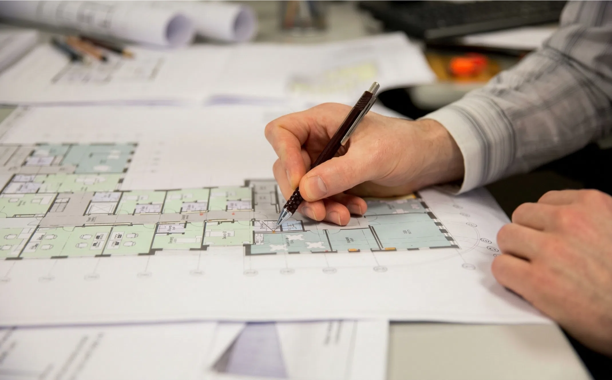
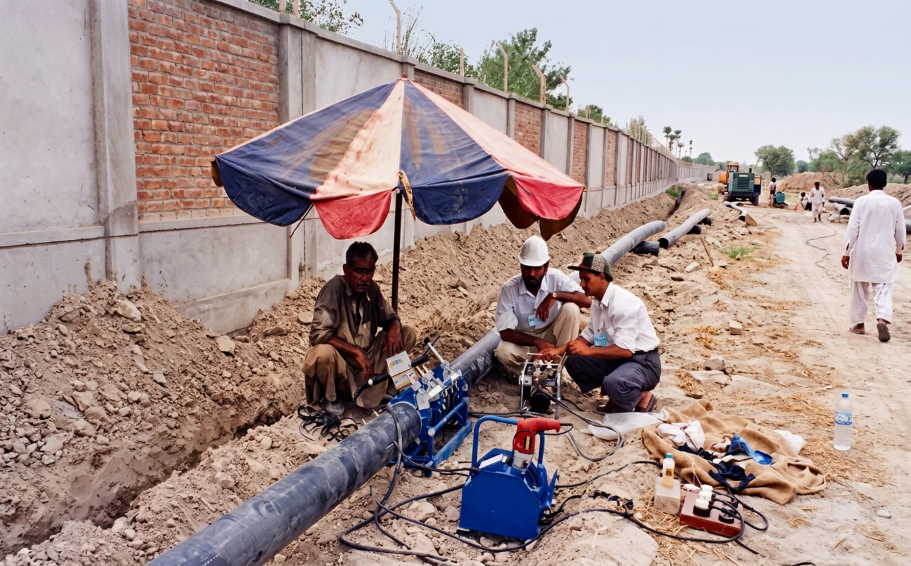
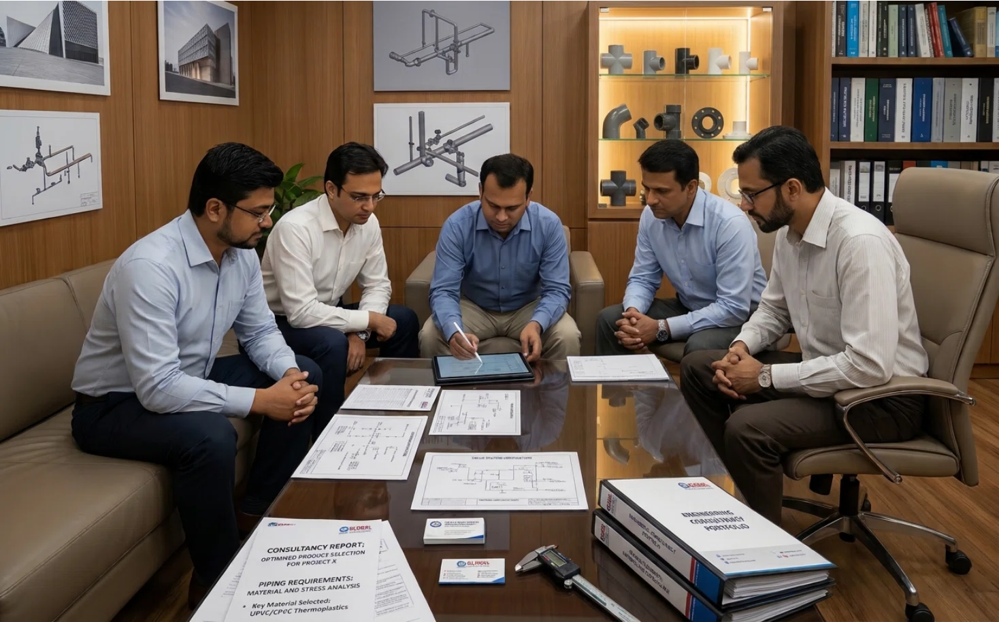
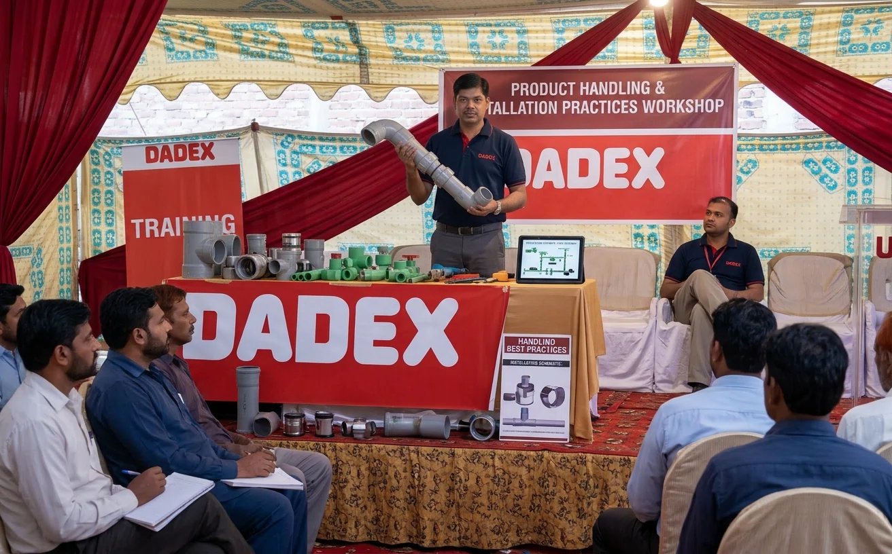

01
Planning & Design
Design Review, BOQs & Estimates
Review of project designs, preparation of Bills of Quantities (BOQs) and estimates based on project requirements.
From design review and technical guidance to product testing and on-site assistance, Dadex provides practical support throughout your project journey.
We combine technical knowledge, practical experience and specialised resources to help customers plan, install and work with Dadex piping and roofing systems.

01Review of project designs, preparation of Bills of Quantities (BOQs) and estimates based on project requirements.

02Product testing and technical guidance to support correct product application and installation practices.
Technical assistance and guidance for proper jointing of piping systems using appropriate methods and equipment.

04Engineering advice and technical guidance for product selection and project-specific piping requirements.

05Product demonstrations and training sessions for internal teams, installers and plumbers, covering product handling and installation practices.
Periodic project visits to review installation progress and provide technical assistance during project execution.
Get in touch with our team for technical guidance, project assistance and information about our services.